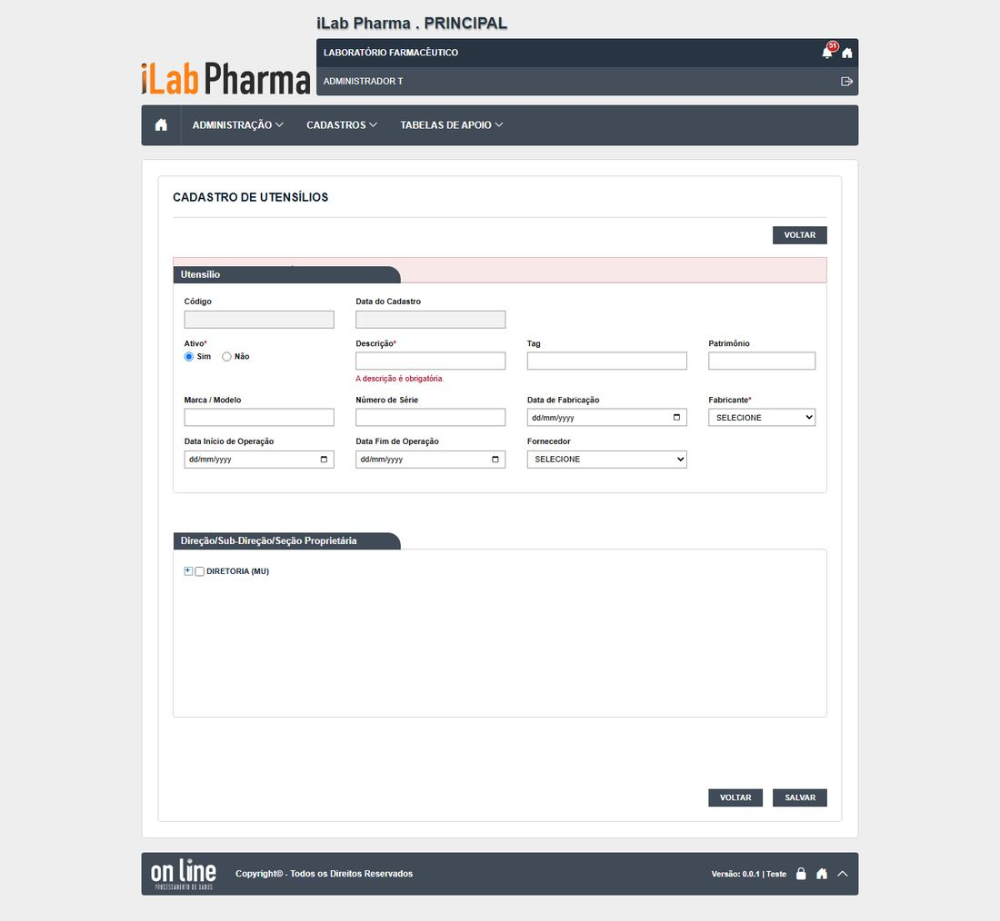
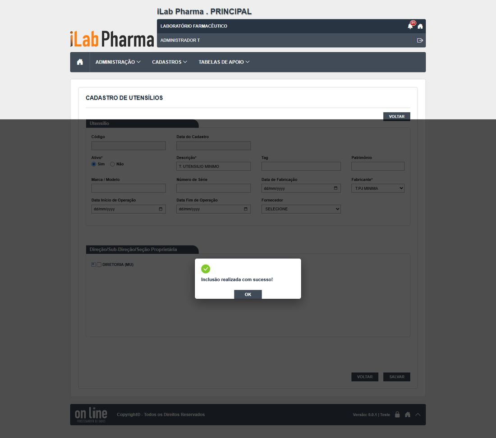
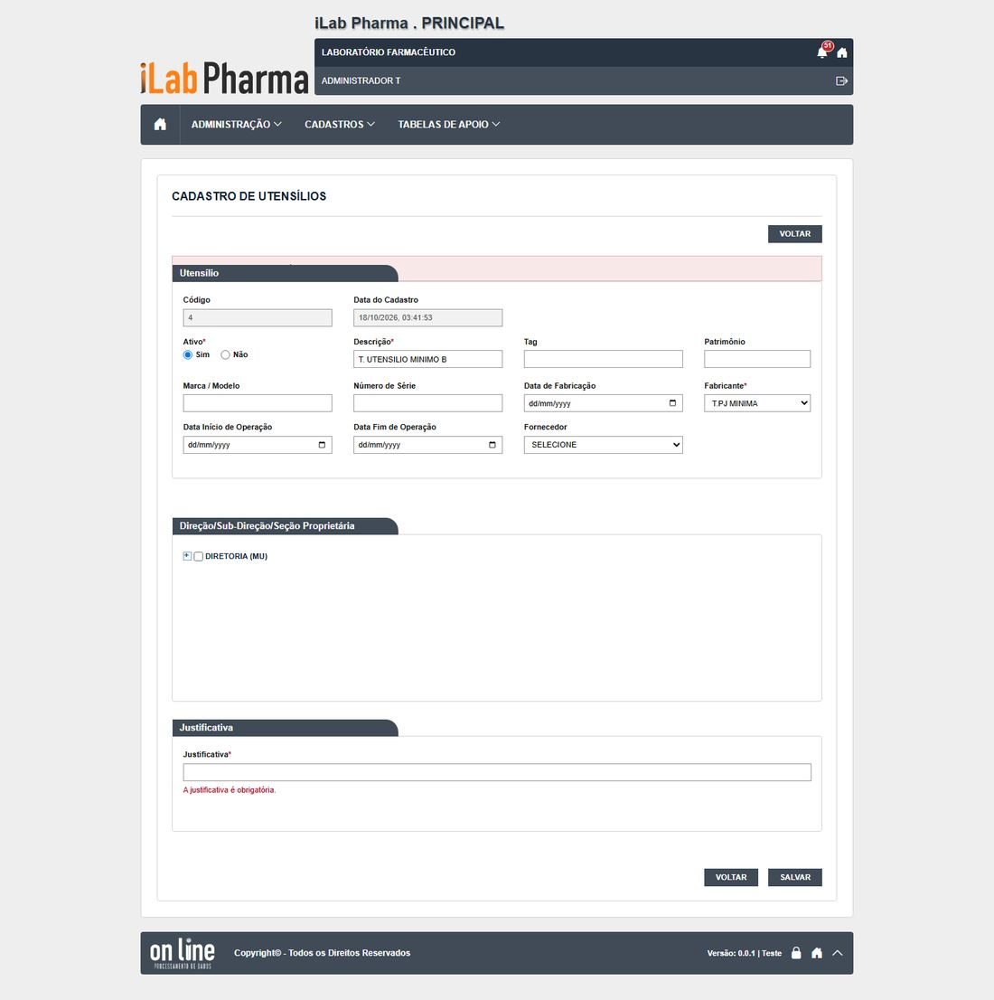
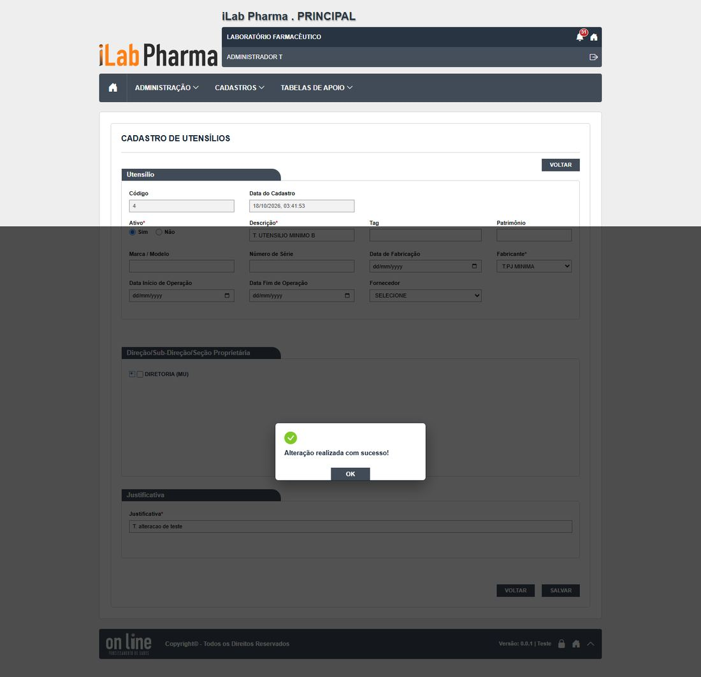
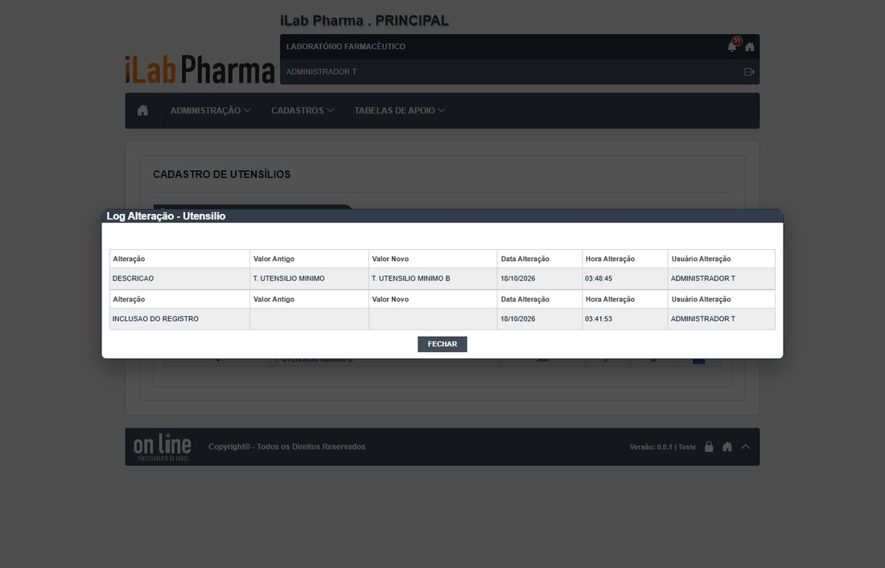
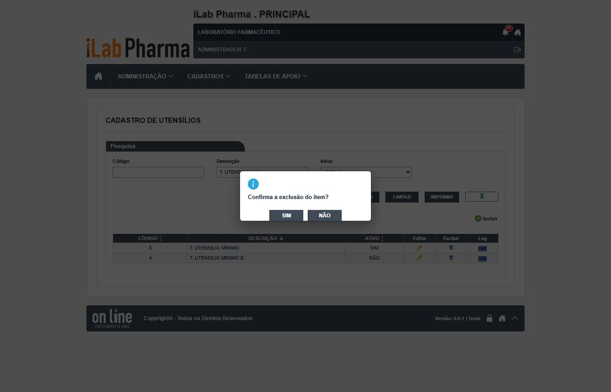
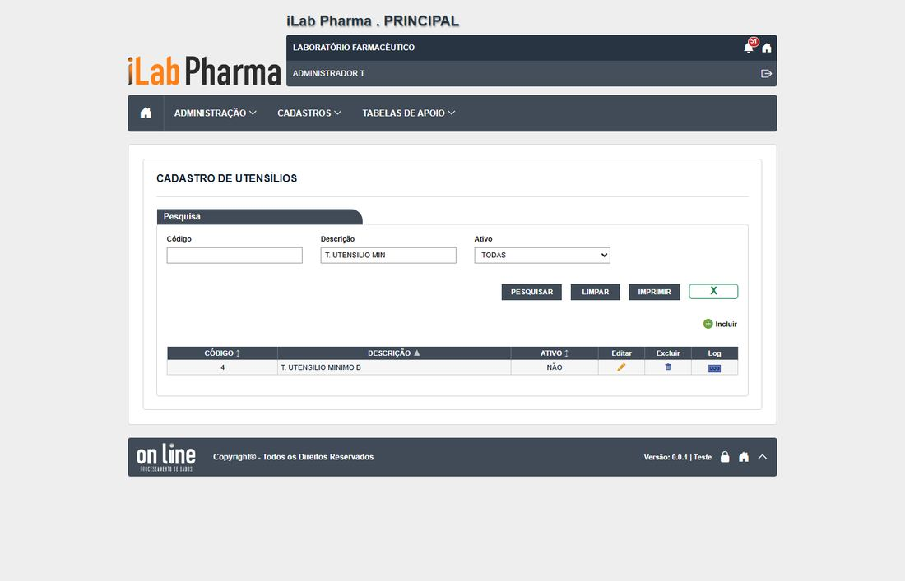
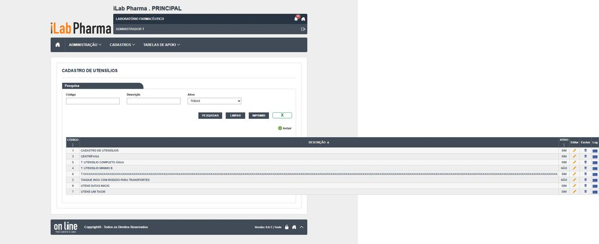

Roteiro para quem vai testar a tela Utensílios (menu Cadastros) na versão nova. Use o ambiente de teste da versão nova; o sistema entregue só entra se um resultado parecer estranho.
Antes de começar
- Usuário com a função da tela no perfil (
t.admin, que cobre Administração e Cadastros). - Registros novos começam por
T.; dados ficam no ambiente. - Todo registro novo começa com
T.(se o ponto falhar, useT-e anote o campo). - Dados de teste ficam no ambiente: não apague o que não criou.
Passos
| # | O que fazer | O que deve aparecer | Caso do plano |
|---|---|---|---|
| 1 | Entrar com um usuário que tenha o perfil 0.T.TESTE_ADMIN ou 0.T.TESTE_CADASTRO e abrir o menu da tela. |
A lista abre com pesquisa. Anote se há os botões Incluir, Excel e Imprimir. | — |
| 2 | Clicar em Incluir e salvar sem preencher nada. Repetir deixando em branco os campos marcados com asterisco, um de cada vez. | Cada tentativa é recusada com mensagem clara, antes de gravar. Anote a mensagem de cada campo. | R3-UE-01 |
| 3 | Preencher só o obrigatório, com nome começando por T., e salvar. Depois incluir outro, completo. Testar os limites de tamanho que a tela mostrar (passar do tamanho e digitar letras onde é número). |
Grava, aparece na lista e o histórico mostra a inclusão. Anote o que a tela corta ou recusa. | R3-UE-02, R3-UE-03 |
| 4 | Incluir de novo o mesmo código ou nome. | Recusa duplicado, ou aceita? Anote (no legado, descrições repetidas eram aceitas em alguns cadastros). | R3-UE-04 |
| 5 | Alterar um campo sem justificativa e depois com justificativa. | Anote se a justificativa é pedida e se o histórico mostra campo, valor antigo, valor novo, usuário, data e justificativa. | R3-UE-05 |
| 6 | Inativar o registro (com justificativa) e abrir a tela que usa esse cadastro, se houver. | O registro inativo não aparece para novas escolhas; os antigos continuam mostrando o valor. | R3-UE-05 |
| 7 | Excluir um registro recém-criado, sem uso. Depois tentar excluir um que esteja ligado a outro cadastro. | O sem uso é excluído (anote se pediu justificativa); o ligado é recusado informando a dependência. | R3-UE-06 |
| 8 | Pesquisar por parte do nome, com e sem acento, em maiúsculas e minúsculas. | Encontra. No legado e em outras telas novas, a pesquisa não ignora acento (DV-PRI-008): anote. | R3-UE-07 |
| 9 | Gerar o Excel e o Imprimir com um filtro ativo. | Mesmo conteúdo da lista filtrada. | R3-UE-08, R3-UE-09 |
Capturas de tela da versão nova
Imagens da rodada de testes de 17/10/2026, na ordem dos passos. Clique para ampliar.
Passo 2

Passo 3

Passo 4

Passo 5



Passo 6
Passo 7


Passo 9

Como registrar
Para cada passo anote: o que apareceu na tela (copie a mensagem), a classe (Igual, Regressão, Melhoria, Novo ou Bloqueado), o defeito (se houver) e o nome da captura. Se um caso ficou Bloqueado, diga o motivo (usuário, perfil ou dado que faltou).
Se algo parecer uma falha de permissão, confira primeiro a Conta usuário e o Perfil do usuário antes de concluir que a tela falhou.
Tabela de resultados
A coluna Resultado do caso em 17/10/2026 traz o que a tela mostrou, para o caso do plano que o passo cobre (passos do mesmo caso repetem o resultado). Refaça o passo e use a última coluna para o seu resultado: se for diferente, anote a classe (Igual, Regressão, Melhoria, Novo ou Bloqueado) e o defeito.
| Passo | Resultado do caso em 17/10/2026 | Classe | Defeito | Captura | Seu resultado |
|---|---|---|---|---|---|
| 1 | |||||
| 2 | "A descrição é obrigatória." (cliente). Fabricante é marcado como obrigatório mas a tela deixa passar: o servidor recusa (400) com "Não foi possível salvar o utensílio." (nada diz que falta o fabricante) | Regressão | N-033 | utens-obrig-vazio, utens-obrig-Descricao |
|
| 3 | Mínimo (descrição e fabricante) e completo gravam / Descrição 255 grava, 256 e 1000: "A descrição é obrigatória."; tag 30 grava, 31: aviso geral. Datas: mensagens sem acento ("A data de fabricacao nao pode ser maior que a data atual."); início antes da fabricação aceito | Novo / Igual | N-022, N-027 | utens-incluir-minimo, utens-incluir-completo |
|
| 4 | Duas "T. UTENSILIO MINIMO" aceitas | Igual | — | utens-duplicado |
|
| 5 | Sem justificativa: "A justificativa é obrigatória."; com justificativa grava; histórico sem a justificativa | Regressão | N-029 | utens-alterar-sem-justificativa, utens-alterar-com-justificativa |
|
| 6 | Sem justificativa: "A justificativa é obrigatória."; com justificativa grava; histórico sem a justificativa | Regressão | N-029 | utens-alterar-sem-justificativa, utens-alterar-com-justificativa |
|
| 7 | "Confirma a exclusão do item?", sem campo de justificativa (API recebe ""); exclui (204) |
Igual | — | utens-excluir-modal, utens-excluir-resultado |
|
| 8 | "AGUA" não acha "ÁGUA"; "água" acha | Igual | — | — | |
| 9 | O botão chama-se "X"; o arquivo traz os 9 utensílios, e a lista filtrada tinha 2: o filtro é ignorado / O PDF diz "FILTRO: EXIBIR TUDO" e lista todos os utensílios, com a lista filtrada em 2; "SUA LOGO AQUI" | Novo | N-025, N-027, N-025, N-028 | lista-utensilios |